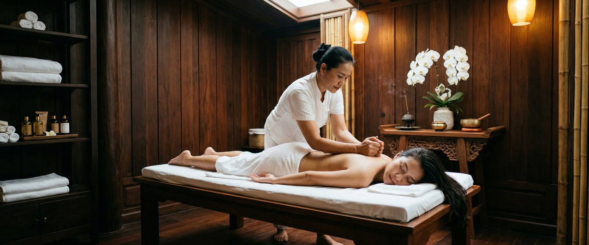
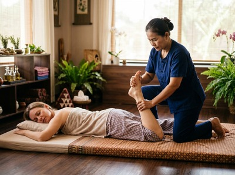

Nina Thai Massage and Healing has built a genuine reputation on Bath Street.

The founder story is compelling: international training, a background that spans continents, and a VTCT Level 3 certification. If you found Nina Thai Massage and Healing while searching for quality Thai massage in Glasgow, that instinct makes sense. The business clearly takes its craft seriously.
But if you are still looking, there may be a practical reason. Nina Thai Massage and Healing does not display a booking system or contact details on its homepage. No customer reviews or ratings are visible on the site either. If you want to see pricing before you commit, or just book without making a phone call, you may have hit a dead end. That is a frustrating place to be when you simply want to get something in the diary.

Serendipity Massage Therapy & Wellness is a professional team practice on Hope Street in Glasgow city centre. Every treatment is built around techniques developed by head therapist Jariya Malone. Each therapist on the team is trained to deliver them to the same standard. This is not a rotating roster of unfamiliar faces. It is a practice where quality is set, taught, and maintained across every session.
Serendipity offers a full treatment menu. That includes traditional Thai massage, Thai oil massage, Swedish massage, sports massage, hot stone massage, and aromatherapy massage. Pricing is clear and visible before you book. The online booking system means you can secure an appointment at any hour, with no phone call needed. Book your session today at https://serendipitymassage.co.uk/book-now/
Nina Thai Massage and Healing does not display pricing on its website. Serendipity lists all treatments and prices so you know what to expect before you arrive. Nina Thai Massage and Healing has no visible booking system on its homepage. Serendipity's online booking at https://serendipitymassage.co.uk/book-now/ is available around the clock. Neither business displays a large public review count. But Serendipity provides clear therapist and team information, so you can arrive knowing who will be treating you.
Where Nina Thai Massage and Healing leads is in its detailed treatment descriptions and the strength of its founder story. Nina's internationally trained background and VTCT Level 3 certification are presented with real clarity. The Bath Street location near Charing Cross may also suit those coming from the West End or Kelvingrove. If you are closer to that part of the city and founder-led care is the priority, that is worth noting honestly.
Serendipity suits people who work or live in Glasgow's financial and professional district. That includes office workers on St Vincent Street, Blythswood Square, and the streets around Buchanan Street who want a reliable lunchtime or after-work appointment they can book online. It also suits anyone who wants a consistent team practice rather than a single-therapist studio. And it suits clients who need to see pricing upfront, or who want a broad treatment menu that includes sports massage and hot stone therapy alongside traditional Thai work.
From Nina Thai Massage and Healing on Bath Street near Charing Cross, the walk to Serendipity takes around twelve to fifteen minutes on foot. Head east along Bath Street, passing Renfield Street and continuing towards the city centre. Turn right onto Hope Street and walk south. Serendipity Massage Therapy & Wellness is at Central Chambers, 93 Hope Street, on the first floor in Suite 50. The entrance is on Hope Street, between West George Street and West Regent Street. Buchanan Street subway station is a short walk away if you prefer the underground for part of the journey.
Get driving directions to Serendipity Massage Therapy & Wellness:
Serendipity Massage Therapy & Wellness — Floor 1, Suite 50, Central Chambers, 93 Hope Street, Glasgow G2 6LD
Book online now at https://serendipitymassage.co.uk/book-now/ and secure your appointment at a time that works for you, no phone call required.
Yes. Serendipity has a full online booking system at https://serendipitymassage.co.uk/book-now/. You can browse treatments, choose a time, and confirm your appointment without calling. Nina Thai Massage and Healing does not display a booking system or contact details on its homepage.
Nina Thai Massage and Healing's founder holds a VTCT Level 3 certification and has trained internationally. That is a strong personal credential. Serendipity works differently. Every therapist is trained to the same standard, using techniques developed by head therapist Jariya Malone. The focus is on consistent quality across the whole team, not a single practitioner.
Serendipity is on Hope Street in Glasgow city centre: Floor 1, Suite 50, Central Chambers, 93 Hope Street, Glasgow G2 6LD. It is a short walk from Buchanan Street and St Enoch subway stations, and close to the offices around Blythswood Square and St Vincent Street.
Serendipity offers traditional Thai massage, Thai oil massage, Swedish massage, sports massage, hot stone massage, and aromatherapy massage. Nina Thai Massage and Healing offers a different range, including couples massage, lymphatic drainage, and a foot spa package. If you need sports massage, hot stone therapy, or traditional Thai massage in Glasgow city centre, Serendipity covers all three.
Yes. Serendipity displays its pricing clearly so you know the cost before you book. Nina Thai Massage and Healing also lists pricing on its website, so both businesses are comparable on that point. Where Serendipity stands apart is in combining clear pricing with a fully functional online booking system.
Serendipity's reputation is built on long-term client relationships across Glasgow's professional and residential communities. Neither Serendipity nor Nina Thai Massage and Healing displays a large public review count on their websites. For the most current ratings and feedback, searching for both businesses on Google will give you the clearest picture.
Ready to book your treatment? Book your appointment online at https://serendipitymassage.co.uk/book-now/ and choose a time that suits you.